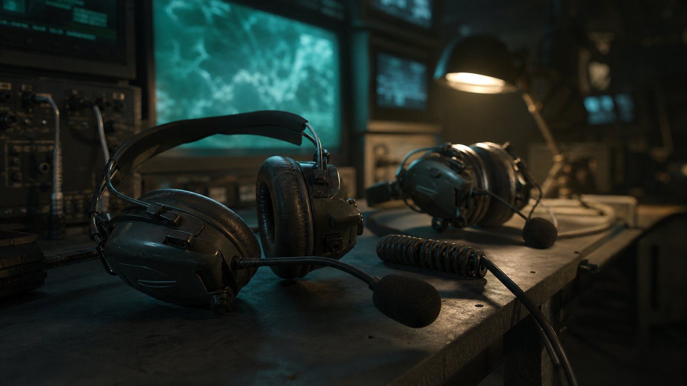
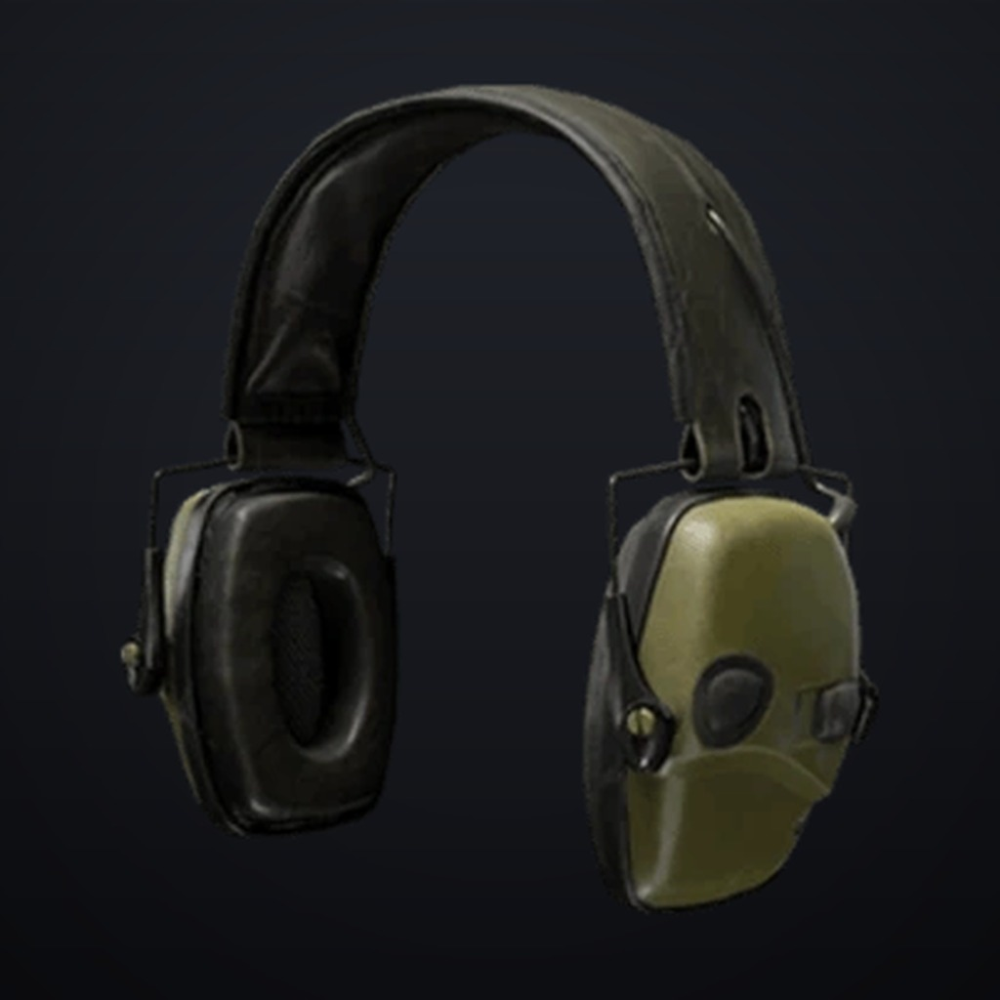
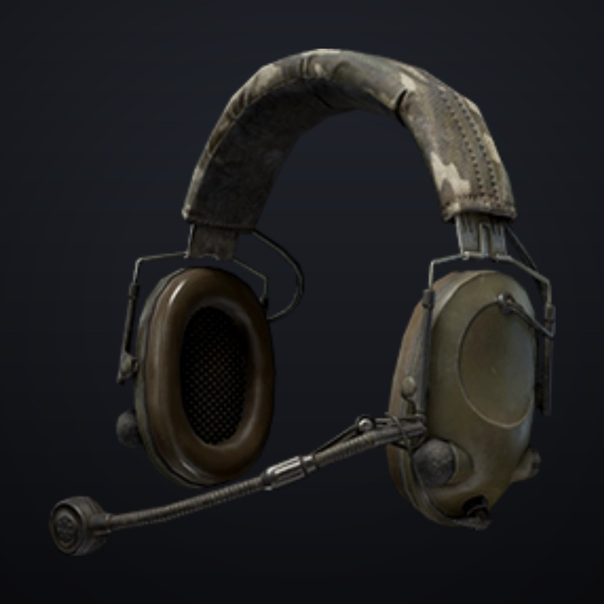
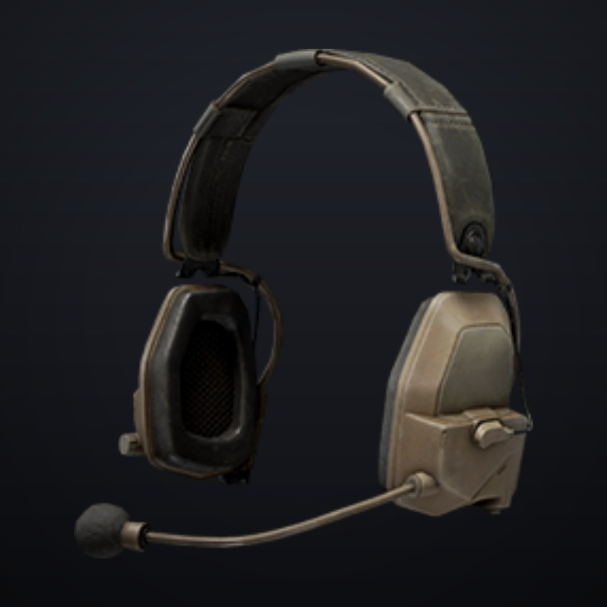
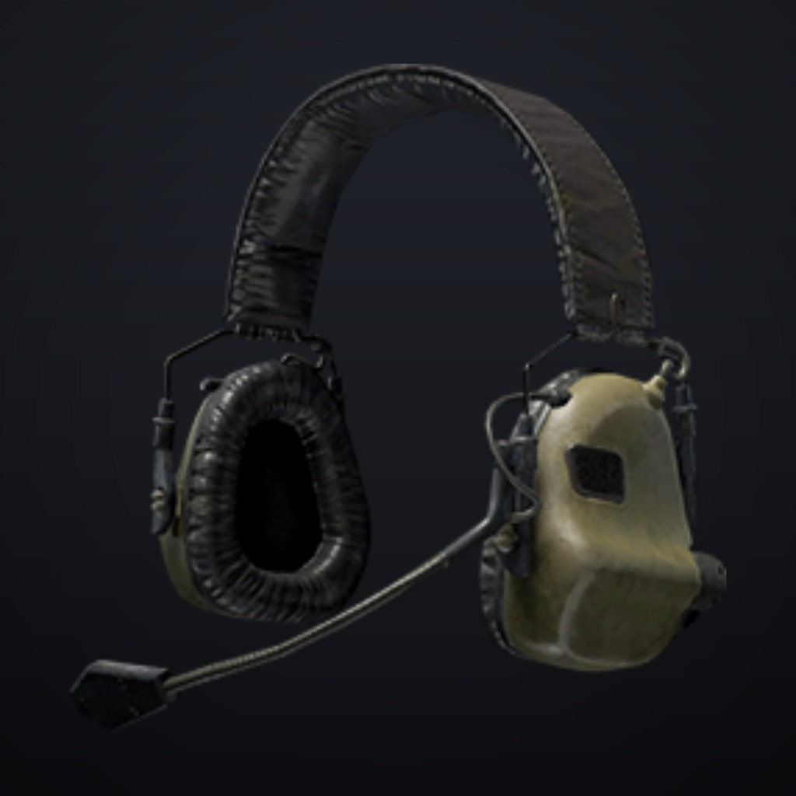
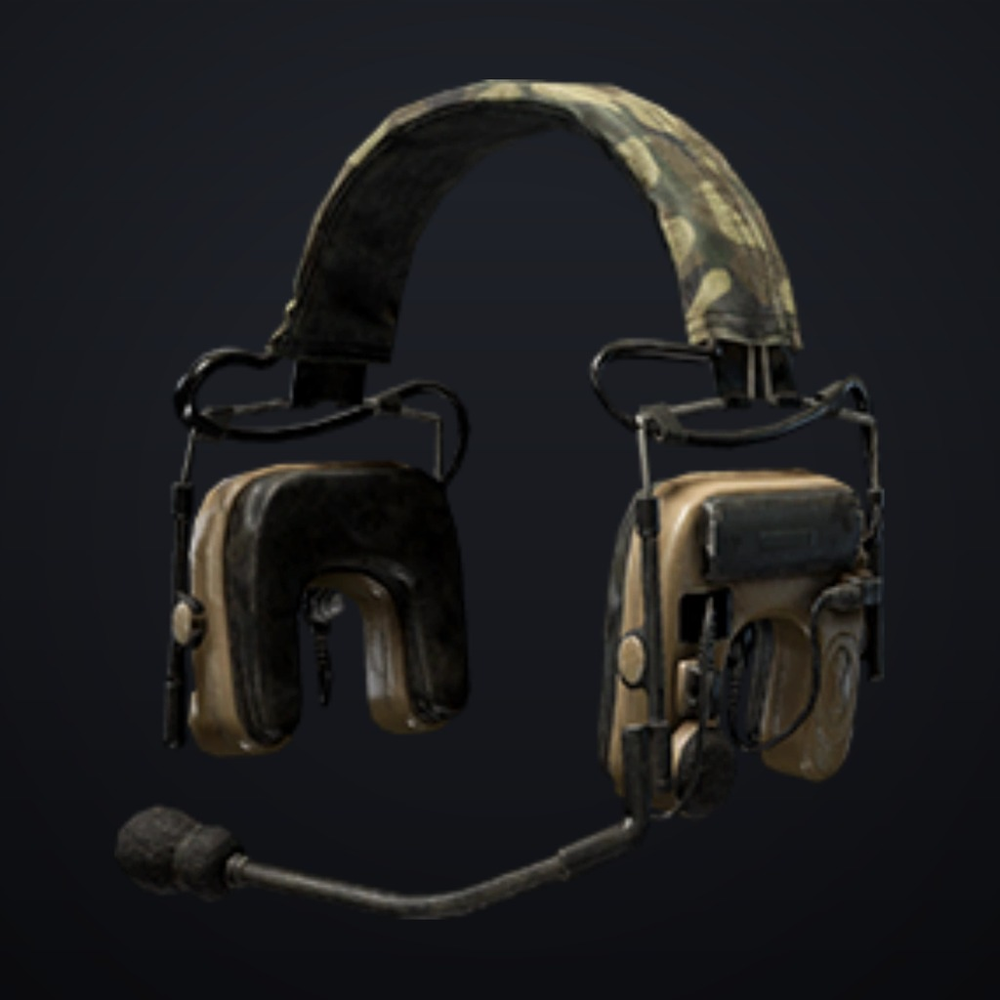

1. Pourquoi le casque audio est l'investissement n°1
Dans ABI, l'audio gagne 80 % des duels avant la vision. Un bon casque vous donne :
- Localisation des pas — direction, distance, surface, crouch vs sprint.
- Reload timing — l'ennemi recharge ? Foncez. Il est en plate ? Attendez.
- Spotting pré-engagement — 3 à 5 secondes d'avance sur chaque contact.
- Détection tiers-partis — les pas d'un troisième larron annoncent le danger.
Le reverse lean ne masque plus la tête
Jusqu'à la Saison 6, s'accroupir et incliner le buste vers l'arrière pouvait réduire la surface de la zone de tête : on absorbait davantage de balles au casque en se penchant. L'éditeur a corrigé ce fonctionnement — « reverse leaning could be used to obscure the head hit area » — et la tête est désormais exactement là où elle semble être.
Concrètement, un joueur qui comptait sur cette posture perd l'avantage. Le reverse lean reste utile pour la stabilité du tir et pour se replier vite, mais il ne constitue plus un bonus de protection. La contre-mesure n'a pas changé : viser la poitrine, qui reste une seule grande plaque, plutôt que la tête.
Source : notes de patch S7 de l'éditeur. Donnée publiée par l'éditeur.
2. Les familles de casques audio
| Type | Force | Faiblesse |
|---|---|---|
| Passif (foam) | Léger, pas de batterie | Pas de suppression du bruit |
| Électronique bas de gamme | Amplification, bon prix | Amplification des explosions proche |
| Électronique premium | SNR, suppression du bruit, radios intégrés | Prix, poids |
| Casque interne (dans le casque) | Gratuit si casque T4+ | Qualité variable selon le casque |
3. S7 : Acoustic Earpads — le gamechanger
Core Mastery S7
Acoustic Earpads neutralise les pics sonores (grenades, tirs proches, explosion T6). Vous entendez l'ennemi PENDANT le chaos — la différence entre un clutch et une mort floue.
- Débloquez Acoustic Earpads en premier (priorité Core Mastery).
- Combinez avec un casque électronique premium : suppression active + ears S7 = ouïe absolue.
- Dans les modes Infected Zone : les mutants sonnent différemment (growl, chitter) — l'audio vous dit quelle menace approche.
4. Conseils de vétéran
- Volume « confortable » = trop bas. Montez jusqu'à entendre les pas fins, puis reculez d'un cran.
- Neutralisez la musique — le mixage menu/raid détruit l'ouïe directionnelle.
- Headset > casque premium : la vision se trompe, jamais le son.
- Test de calibration avant chaque raid : tapez dans le vide et localisez.
5. Les arbitrages audio que personne n'explique
Un casque audio ne change aucune statistique. Il change le moment où vous apprenez qu'un ennemi existe — et en extraction shooter, une information arrivée deux secondes trop tard vaut zéro. Encore faut-il savoir ce que vous perdez exactement. Communautaire
| Information | Ce que l'ouïe donne | La contrepartie |
|---|---|---|
| Rechargement | Un rechargement est un bruit métallique net : on sait qu'un ennemi recharge, donc qu'il est vulnérable | Aucun — c'est l'info la plus rentable du jeu |
| Painkillers | Le bruit caractéristique d'un soin consommé signale un ennemi blessé, donc probablement proche | Vous l'entendez, mais le bruit de vos propres soins vous trahit aussi |
| Pas et collisions | Un déplacement sur du métal ou du gravier s'entend de loin | Sur terrain meuble, le silence est total : le casque n'a rien à vous donner |
| Blocage sonore du casque | — | C'est le vrai coût. Un casque lourd covering les oreilles coupe une partie du spectre : c'est pourquoi les Acoustic Earpads existent |
Le vrai arbitrage n'est pas « passif ou électronique »
La question utile n'est pas « quel casque audio choisir » mais « mon casque de tête me laisse-t-il entendre ? » Trois cas concrets :
- Casque T5/T6 couvrant les oreilles (03 Heavy, RSP, SH Maska) : même un casque audio excellent ne servira presque à rien. Les Acoustic Earpads, qui réduisent l'effet de blocage des casques, sont précisément la réponse officielle à ce problème. Officiel
- Casque audio : il vous faut à la fois les oreilles libres et l'information : l'IND70 est cité comme la seule option T6 compatible avec un casque audio de type GS2. Communautaire
- En escouade : un camarade qui porte le casque audio peut porter le casque lourd qui bloque le son, et vous restituer l'information. Le travail d'équipe remplace l'équipement. Communautaire
Le protocole audio en quatre temps
- Avant de pousser : arrêtez-vous, coupez le son du jeu, listenez 5 secondes. C'est la décision la plus rentable du jeu et presque personne ne la prend.
- En rotation : déplacez-vous par à-coups, jamais en ligne droite. Le bruit que vous faites est une information que vous offrez.
- Après un tir : changez de position immédiatement. Votre position est connue.
- Avant l'extraction : le silence est un atout — un couloir sans bruit est un couloir que personne ne surveille.
Galerie officielle
Artworks officiels du wiki ABI. Un casque audio ne change pas vos statistiques : il change le moment ou vous apprenez qu'un enemy est la.

com1
Com1, casque audio tactique basique.

cmd

gs2
GS2, casque audio avec isolation renforcee.

m32
M32, casque audio de l'équipe.

z038
Z038, référence haute de gamme.